from sklearn.svm import LinearSVC, SVC, LinearSVR
from sklearn.linear_model import LogisticRegression
from sklearn.decomposition import PCA
from sklearn.model_selection import train_test_split
from sklearn.metrics import r2_score
from sklearn.pipeline import make_pipeline
from scipy.stats import multivariate_normal
from sklearn.preprocessing import Normalizer
from sklearn.datasets import load_iris, load_diabetes, load_digits
from CompStats.metrics import recall_score, f1_score, precision_score
from matplotlib import pylab as plt
import numpy as np
import cvxpy as cp
import pandas as pd
import seaborn as sns9 Discriminantes Lineales
El objetivo de la unidad es conocer y aplicar diferentes métodos lineales de discriminación para atacar problemas de clasificación.
9.1 Paquetes usados
9.2 Introducción
En unidades anteriores se han visto diferentes técnicas para discriminar entre clases; en particular se ha descrito el uso de la probabilidad \(\mathbb P(\mathcal Y \mid \mathcal X)\) para encontrar la clase más probable. Los parámetros de \(\mathbb P(\mathcal Y \mid \mathcal X)\) se han estimado utilizando métodos paramétricos y no paramétricos. En está unidad se describe el uso de funciones discriminantes para la clasificación y su similitud con el uso de \(\mathbb P(\mathcal Y \mid \mathcal X).\)
9.3 Función Discriminante
En la unidad de Teoría de Decisión Bayesiana (Capítulo 2) se describió el uso de \(\mathbb P(\mathcal Y \mid \mathcal X)\) para clasificar, se mencionó que la clase a la que pertenece \(\mathcal X=x\) es la de mayor probabilidad, es decir,
\[ C(x) = \textsf{argmax}_{k=1}^K \mathbb P(\mathcal Y=k \mid \mathcal X=x), \]
donde \(K\) es el número de clases y \(\mathcal Y=k\) representa la \(k\)-ésima clase. Considerando que la evidencia es un factor que normaliza, entonces, \(C(x)\) se puede definir de la siguiente manera.
\[ C(x) = \textsf{argmax}_{k=1}^K \mathbb P(\mathcal X=x \mid \mathcal Y=k)\mathbb P(\mathcal Y=k). \]
Agrupando la probabilidad a priori y verosimilitud en una función \(g_k,\) es decir, \(g_k(x) = P(\mathcal X=x \mid \mathcal Y=k)\mathbb P(\mathcal Y=k),\) hace que \(C(x)\) se sea:
\[ C(x) = \textsf{argmax}_{k=1}^K g_k(x). \]
Observando \(C(x)\) y olvidando los pasos utilizados para derivarla, uno se puede imaginar que lo único necesario para generar un clasificador de \(K\) clases es definir un conjunto de functions \(g_k\) que separen las clases correctamente. En esta unidad se presentan diferentes maneras para definir \(g_k\) con la característica de que todas ellas son lineales, e.g., \(g_k(\mathbf x) = \mathbf w_k \cdot \mathbf x + w_{k_0}.\)
9.3.1 Clasificación Binaria
La descripción de discriminantes lineales empieza con el caso particular de dos clases, i.e., \(K=2\). En este caso \(C(\mathbf x)\) es encontrar el máximo de las dos funciones \(g_1\) y \(g_2\). Una manear equivalente sería definir a \(C(\mathbf x)\) como
\[ C(\mathbf x) = \textsf{sign}(g_1(\mathbf x) - g_2(\mathbf x)), \]
donde \(\textsf{sign}\) es la función que regresa el signo, entonces solo queda asociar el signo positivo a la clase 1 y el negativo a la clase 2. Utilizando esta definición se observa lo siguiente
\[ \begin{split} g_1(\mathbf x) - g_2(\mathbf x) &= (\mathbf w_1 \cdot \mathbf x + w_{1_0}) - (\mathbf w_2 \cdot \mathbf x + w_{2_0}) \\ &= (\mathbf w_1 + \mathbf w_2) \cdot \mathbf x + (w_{1_0} - w_{2_0}) \\ &= \mathbf w \cdot \mathbf x + w_0 \end{split}, \]
donde se concluye que para el caso binario es necesario definir solamente una función discriminante y que los parámetros de esta función son \(\mathbf w\) y \(\mathbf w_0.\) Otra característica que se ilustra es que el parámetro \(\mathbf w_0\) está actuando como un umbral, es decir, \(\mathbf x\) corresponde a la clase positiva si \(\mathbf w \cdot \mathbf x > -w_0.\)
En la Figura 9.1 se observa el plano (linea) que divide las dos clases, este plano representa los puntos que satisfacen \(g(\mathbf x)=0\).
Código
X_1 = multivariate_normal(mean=[15, 20],
seed=0,
cov=[[3, -3], [-3, 8]]).rvs(1000)
X_2 = multivariate_normal(mean=[5, 5],
seed=0,
cov=[[4, 0], [0, 2]]).rvs(1000)
T = np.concatenate((X_1, X_2))
y_t = np.array(['P'] * X_1.shape[0] + ['N'] * X_2.shape[0])
linear = LinearSVC(dual=False).fit(T, y_t)
w_1, w_2 = linear.coef_[0]
w_0 = linear.intercept_[0]
g_0 = [dict(x1=x, x2=y, tipo='g(x)=0')
for x, y in zip(T[:, 0], (-w_0 - w_1 * T[:, 0]) / w_2)]
df = pd.DataFrame(g_0 + \
[dict(x1=x, x2=y, clase='P') for x, y in X_1] + \
[dict(x1=x, x2=y, clase='N') for x, y in X_2]
)
ax = sns.scatterplot(data=df, x='x1', y='x2', hue='clase', legend=True)
sns.lineplot(data=df, x='x1', y='x2', ax=ax, hue='tipo', palette=['k'], legend=True)
_ = ax.axis('equal')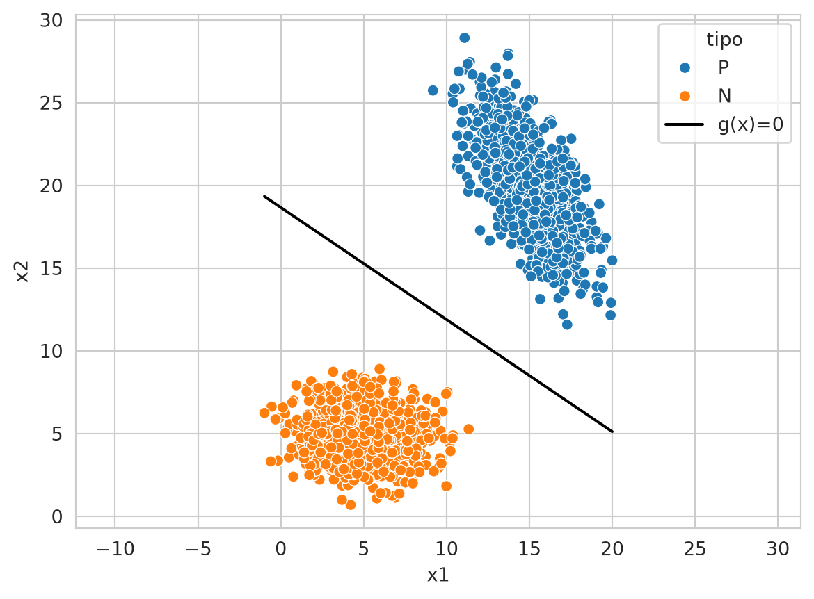
9.3.2 Geometría de la Función de Decisión
La función discriminante \(g(\mathbf x) = \mathbf w \cdot \mathbf x + w_0\) tiene una representación gráfica. Lo primero que se observa es que los parámetros \(\mathbf w\) viven en al mismo espacio que los datos, tal y como se puede observar en la Figura 9.2.
Código
_ = pd.DataFrame([dict(x1=w_1, x2=w_2, clase='w')])
df = pd.concat((df, _), axis=0)
ax = sns.scatterplot(data=df, x='x1', y='x2', hue='clase', legend=True)
sns.lineplot(data=df, x='x1', y='x2', ax=ax, hue='tipo', palette=['k'], legend=True)
_ = ax.axis('equal')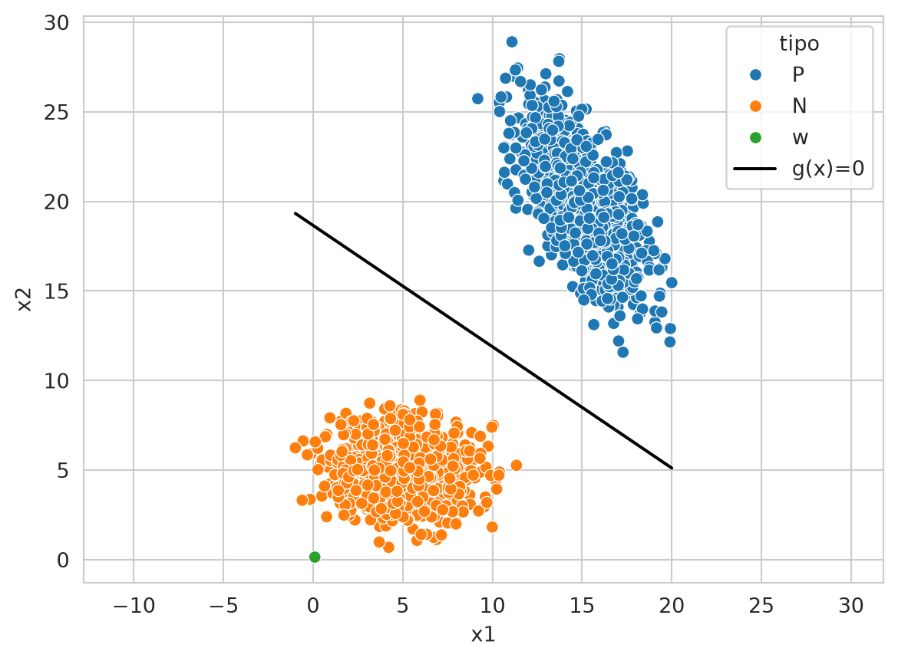
Siguiendo con la descripción, los parámetros \(\mathbf w\) y la función \(g(\mathbf x)\) son ortogonales, tal y como se muestra en la Figura 9.3. Analiticamente la ortogonalidad se define de la siguiente manera. Sea \(\mathbf x_a\) y \(\mathbf x_b\) dos puntos en \(g(\mathbf x)=0\), es decir,
\[ \begin{split} g(\mathbf x_a) &= g(\mathbf x_b) \\ \mathbf w \cdot \mathbf x_a + w_0 &= \mathbf w \cdot \mathbf x_b + w_0\\ \mathbf w \cdot (\mathbf x_a - \mathbf x_b) &= 0, \end{split} \]
donde el vector \(\mathbf x_a - \mathbf x_b\) es paralelo a \(g(\mathbf x)=0\), ortogonal a \(\mathbf w\) y el sub-espacio generado por \(\mathbf w \cdot (\mathbf x_a - \mathbf x_b) = 0\) pasa por el origen.
Código
w = np.array([w_1, w_2]) / np.linalg.norm([w_1, w_2])
len_0 = w_0 / np.linalg.norm([w_1, w_2])
df = pd.DataFrame(g_0 + \
[dict(x1=x, x2=y, clase='P') for x, y in X_1] + \
[dict(x1=x, x2=y, clase='N') for x, y in X_2] + \
[dict(x1=0, x2=0, tipo='lw'),
dict(x1=-w[0]*len_0, x2=-w[1]*len_0, tipo='lw')]
)
ax = sns.scatterplot(data=df, x='x1', y='x2', hue='clase', legend=True)
sns.lineplot(data=df, x='x1', y='x2', ax=ax, hue='tipo',
palette=['k'] + sns.color_palette()[2:3],
legend=True)
_ = ax.axis('equal')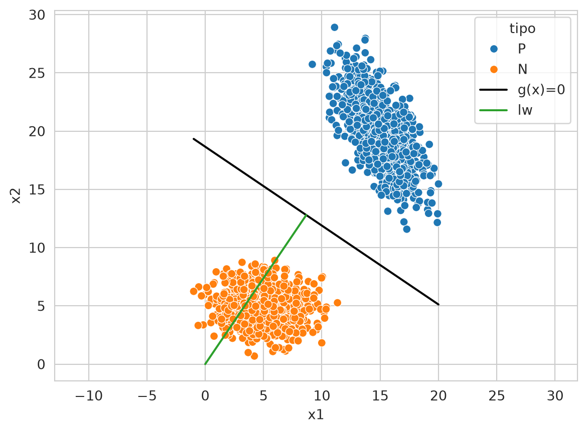
En la figura anterior, \(\ell \mathbf w\) corresponde al vector \(\mathbf w\) multiplicado por un factor \(\ell\) de tal manera que intersecte con \(g(\mathbf x)=0.\) El factor \(\ell\) corresponde a la distancia que hay del origen a \(g(\mathbf x)=0\) la cual es \(\ell = \frac{w_0}{\mid\mid \mathbf w \mid\mid}.\) El signo de \(\ell\) indica el lado donde se encuentra el origen con respecto a \(g(\mathbf x)=0.\)
La Figura 9.4 muestra en rojo la línea generada por \(\mathbf w \cdot \mathbf x=0\), la función discriminante \(g(\mathbf x)=0\) (negro), la línea puntuada muestra la distancia entre ellas, que corresponde a \(\ell\) y el vector \(\mathbf w\). Visualmente, se observa que \(\mathbf w\) está pegado a la línea roja, pero esto solo es un efecto de la resolución y estos elementos no se tocan.
Código
vec = np.array([1, (- w_1 * 1) / w_2])
x_max = T[:, 0].max()
length = np.linalg.norm(np.array([x_max, (-w_0 - w_1 * x_max) / w_2]) -
np.array([-w[0]*len_0, -w[1]*len_0]))
vec_der = length * vec / np.linalg.norm(vec)
x_min = T[:, 0].min()
length = np.linalg.norm(np.array([x_min, (-w_0 - w_1 * x_min) / w_2]) -
np.array([-w[0]*len_0, -w[1]*len_0]))
vec_izq = -length * vec / np.linalg.norm(vec)
g = [dict(x1=x, x2=(- w_1 * x) / w_2, tipo='wx=0')
for x in np.linspace(vec_izq[0], vec_der[0])]
df = pd.DataFrame([dict(x1=x, x2=y, clase='P') for x, y in X_1] + \
[dict(x1=x, x2=y, clase='N') for x, y in X_2] +\
[dict(x1=w_1, x2=w_2, clase='w')] +\
g_0 + g)
ax = sns.scatterplot(data=df, x='x1', y='x2', hue='clase', legend=True)
sns.lineplot(data=df, x='x1', y='x2', ax=ax, hue='tipo',
palette=['k'] + sns.color_palette()[3:4],
legend=True)
ax.plot([vec_der[0], x_max], [vec_der[1], (-w_0 - w_1 * x_max) / w_2], '--',
color=sns.color_palette()[4])
_ = ax.axis('equal')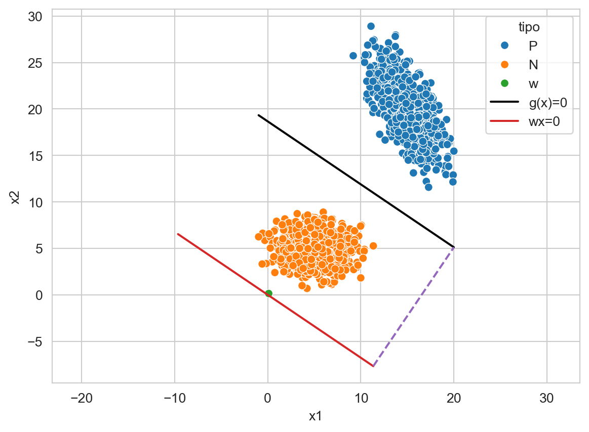
Finalmente, será de utilidad representar a cada punto en \(\mathcal D\) de la siguiente manera
\[ \mathbf x = \mathbf x_g + \ell \frac{\mathbf w}{\mid\mid \mathbf w \mid\mid}, \]
donde \(\mathbf x_g\) corresponde a la proyección en el hiperplano (\(g(\mathbf x) = 0\)) de \(\mathbf x\) y \(\ell\) es la distancia que hay del hiperplano a \(\mathbf x\). Utilizando esta representación se puede derivar la distancia \(\ell\) de \(\mathbf x\) con el siguiente procedimiento.
\[ \begin{split} g(\mathbf x) &= g(\mathbf x_g + \ell \frac{\mathbf w}{\mid\mid \mathbf w \mid\mid})\\ &= \mathbf w \cdot (\mathbf x_g + \ell \frac{\mathbf w}{\mid\mid \mathbf w \mid\mid}) + w_0\\ &= \mathbf w \cdot (\mathbf x_g + \ell \frac{\mathbf w}{\mid\mid \mathbf w \mid\mid})\\ &= \mathbf w \cdot \mathbf x_g + \ell \mathbf w \cdot \frac{\mathbf w}{\mid\mid \mathbf w \mid\mid}\\ &= \ell \mathbf w \cdot \frac{\mathbf w}{\mid\mid \mathbf w \mid\mid}\\ &= \ell \mid\mid\mathbf w\mid\mid\\ \ell &= \frac{g(\mathbf x)}{\mid\mid\mathbf w \mid\mid} \end{split} \tag{9.1}\]
Como ya se había visto la distancia del origen al hiperplano está dada por \(\ell_0 = \frac{w_0}{\mid\mid\mathbf w \mid\mid}\) y de cualquier elemento por \(\ell_{\mathbf x} = \frac{g(\mathbf x)}{\mid\mid\mathbf w \mid\mid}.\) La Figura 9.5 muestra la \(\ell_{\mathbf x}\) en un elemento de la clase negativa. Se puede observar el punto \(\mathbf x_g\) que es donde intersecta la línea con el hiperplano.
Código
point = X_2[X_2.argmax(axis=0)[1]]
point_g = vec * np.dot(point, vec) / np.dot(vec, vec) - len_0 * w
df = pd.DataFrame(g_0 + \
[dict(x1=x, x2=y, clase='P') for x, y in X_1] +\
[dict(x1=x, x2=y, clase='N') for x, y in X_2] +\
[dict(x1=point_g[0], x2=point_g[1], tipo='lx')] +\
[dict(x1=point[0], x2=point[1], tipo='lx')]
)
ax = sns.scatterplot(data=df, x='x1', y='x2', hue='clase', legend=True)
sns.lineplot(data=df, x='x1', y='x2', ax=ax,
hue='tipo',palette=['k'] + sns.color_palette()[4:5], legend=True)
_ = ax.axis('equal')Considerando que el problema mostrado en la figura anterior está en \(\mathbb R^2\), entonces \(\mathbf x_g\) está dado por
\[ \mathbf x_g = \frac{\mathbf x \cdot \mathbf x_0}{\mathbf x_0 \cdot \mathbf x_0} \mathbf x_0 - \ell_0 \frac{\mathbf w}{\mid\mid\mathbf w \mid\mid}, \]
donde \(\ell_0\) es la distancia del origen al hiperplano y \(\mathbf x_0\) es cualquier vector que está en \(\mathbf x_0 \cdot \mathbf w=0.\) Para dimensiones mayores el término \(\frac{\mathbf x \cdot \mathbf x_0}{\mathbf x_0 \cdot \mathbf x_0}\) es la proyección al hiperplano \(A\) tal que \(A \mathbf w = 0.\)
9.3.3 Múltiples Clases
Una manera de tratar un problema de \(K\) clases, es convertirlo en \(K\) problemas de clasificación binarios, a este procedimiento se le conoce como Uno vs Resto. La idea es entrenar \(K\) clasificadores donde la clase positiva corresponde a cada una de las clases y la clase de negativa se construye con todas las clases que no son la clase positiva en esa iteración. Finalmente, la clase predicha corresponde al clasificador que tiene el valor máximo en la función discriminante.
La Figura 9.6 ejemplifica el comportamiento de esta técnica en un problema de tres clases y utilizando un clasificador con discrimitante lineal. En la figura se muestra las tres funciones discriminantes \(g_k(\mathbf x)=0\), los parámetros escalados de esas funciones, i.e., \(\ell_k \mathbf w_k\) y los datos. Por ejemplo se observa como la clase \(1\) mostrada en azul, se separa de las otras dos clases con la función \(g_1(\mathbf x)=0\), es decir, para \(g_1(\mathbf x)=0\) la clase positiva es \(1\) y la clase negativa corresponde a los elementos que corresponde a las clases \(2\) y \(3.\)
Código
seed = 3
X_1 = multivariate_normal(mean=[15, 20],
seed=seed,
cov=[[3, -3], [-3, 8]]).rvs(1000)
X_2 = multivariate_normal(mean=[5, 5],
seed=seed,
cov=[[4, 0], [0, 2]]).rvs(1000)
X_3 = multivariate_normal(mean=[-5, 20],
seed=seed,
cov=[[2, 1], [1, 2]]).rvs(1000)
T = np.concatenate((X_1, X_2, X_3))
y_t = np.array(['1'] * X_1.shape[0] + ['2'] * X_2.shape[0] + ['3'] * X_3.shape[0])
linear = LinearSVC(dual=False).fit(T, y_t)
g_0 = []
for i, (w, w_0) in enumerate(zip(linear.coef_, linear.intercept_)):
w_1, w_2 = w
g_0 += [dict(x1=x, x2=y, tipo=f'g{i+1}(x)=0')
for x, y in zip(T[:, 0], (-w_0 - w[0] * T[:, 0]) / w[1])]
W = [-w0 * w / np.linalg.norm(w)**2
for w, w0 in zip(linear.coef_, linear.intercept_)]
df = pd.DataFrame(g_0 + \
[dict(x1=x, x2=y, clase='1') for x, y in X_1] +\
[dict(x1=x, x2=y, clase='2') for x, y in X_2] +\
[dict(x1=x, x2=y, clase='3') for x, y in X_3] +\
[dict(x1=w_1, x2=w_2, clase=f'lw{i+1}')
for i, (w_1, w_2) in enumerate(W)]
)
ax = sns.scatterplot(data=df, x='x1', y='x2', hue='clase', legend=True)
sns.lineplot(data=df, x='x1', y='x2', ax=ax, hue='tipo',
palette=sns.color_palette()[6:9], legend=True)
_ = ax.axis('equal')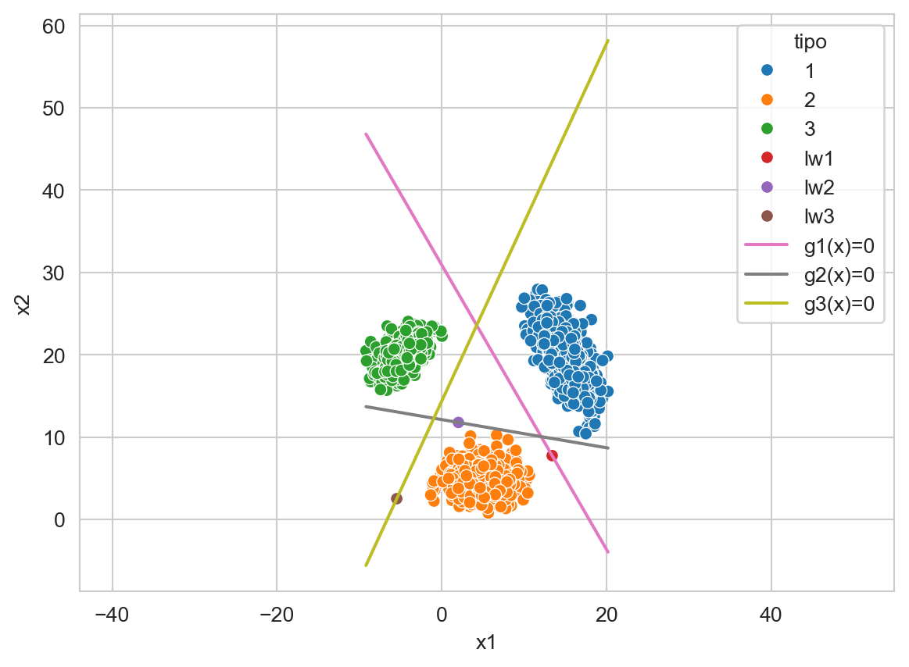
9.4 Máquinas de Soporte Vectorial
Es momento de describir algunos algoritmos para estimar los parámetros \(\mathbf w\), y \(w_0\) empezando por las Máquinas de Soporte Vectorial (MSV) propuestas por Cortes y Vapnik (1995). En este clasificador se asume un problema binario y las clases están representadas por \(-1\) y \(1\), es decir, \(y \in \{-1, 1\}\). Entonces, las máquinas de soporte vectorial tratan de encontrar una función con las siguientes características.
Sea \(\mathbf x_i\) un ejemplo que corresponde a la clase \(1\) entonces se busca \(\mathbf w\) tal que
\[ \mathbf w \cdot \mathbf x_i + w_0 \geq +1. \]
En el caso contrario, es decir, \(\mathbf x_i\) un ejemplo de la clase \(-1\), entonces
\[ \mathbf w \cdot \mathbf x_i + w_0 \leq -1. \]
Estas ecuaciones se pueden escribir como
\[ (\mathbf w \cdot \mathbf x_i + w_0) y_i \geq +1, \]
donde \((\mathbf x_i, y_i) \in \mathcal D.\)
La función discriminante es \(g(\mathbf x) = \mathbf w \cdot \mathbf x + w_0\) y la distancia (Ecuación 9.1) que existe entre cualquier punto \(\mathbf x_i\) al discriminante está dada por
\[ \frac{g(\mathbf x_i)}{\mid\mid \mathbf w \mid\mid}y_i. \]
Entonces, se puede ver que lo que se busca es encontrar \(\mathbf w\) de tal manera que cualquier punto \(\mathbf x_i\) esté lo mas alejada posible del discriminante, esto se logra minimizando \(\mathbf w\), es decir, resolviendo el siguiente problema de optimización:
\[ \begin{split} \min & \frac{1}{2} \mid\mid\mathbf w \mid\mid \\ \text{sujeto a} & \\ & (\mathbf w \cdot \mathbf x_i + w_0) y_i \geq 1 \\ \end{split} \tag{9.2}\]
El problema de optimización de la Ecuación 9.2 tiene solución solamente que los ejemplos sean linealmente separables. El siguiente código muestra la códificación de la Ecuación 9.2 utilizando CVXPY (Diamond y Boyd (2016)). Las primeras dos lineas corresponden a los datos de clasificación, X tiene las variables independientes y y corresponde a la clase. Las variables del problema de optimización están en w y w0; las restricciones están codificadas en la variable constraintsy la función objetivo en la variable obj. La penúltima linea genera el problema de optimización y se resuelve en la última instrucción.
X = np.concatenate((X_1, X_2))
y = np.array([1] * X_1.shape[0] + [-1] * X_2.shape[0])
w = cp.Variable(X.shape[1])
w0 = cp.Variable()
constraints = [cp.multiply(X @ w + w0, y) >= 1]
obj = cp.norm(w) / 2
prob = cp.Problem(cp.Minimize(obj), constraints=constraints)
_ = prob.solve()
TipActividad
Graficar la función de decisión encontrada al optimizar la Ecuación 9.2. La función de decisión se observa en color verde con la leyenda \(g(x)\); además se incluye la función encontrada por una MSV lineal identificada con la leyenda \(g_{\textsf{msv}}.\) Modificar el parámetro C (utilizar un número cercano a cero y un número considerablemente grande e.g. \(1^{10}\)) de la clase LinearSVC y grafique nuevamente las funciones de decisión para tener una intución de lo que está haciendo ese parámetro.
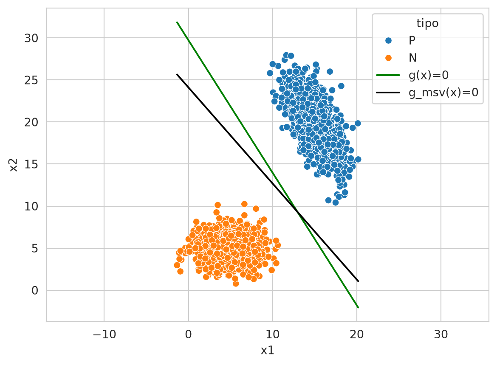
El problema de clasificación anterior se puede modificar para generar un problema que no sea linealmente separable, una manera es cambiar un ejemplo de clase tal y como se muestra en la siguiente instrucción.
y[-1] = 1Con la modificación anterior el problema de optimización se vuelve infactible tal y como se puede observar al ejecutar el siguiente código,
constraints = [cp.multiply(X @ w + w0, y) >= 1]
obj = cp.norm(w) / 2
prob = cp.Problem(cp.Minimize(obj), constraints=constraints)
_ = prob.solve()donde el atributo prob.status regresa el valor de infeasible.
Para que este problema tenga una solución factible es necesario relajar las restricciones permitiendo que algunas de las restricciones no se cumplan, esto se realiza utilizando una variable \(\xi_i\) la cual sea no negativa (i.e., \(\xi_i \geq 0\)), de tal manera que si todas las restricciones se cumplen se llega a la Ecuación 9.2. Adicionalmente, se requiere incluir el peso de las restricciones que no se han cumplido, esto se hace incorporando \(\sum_i \xi\) y pesando el término por un parámetro \(C > 0\). El resultado final se observa en la Ecuación 9.3, donde se incluye utiliza \(\mathbf w \cdot \mathbf w\), en lugar de \(\mid\mid\mathbf w \mid\mid\) para seguir la formulación propuesta en Cortes y Vapnik (1995).
\[ \begin{split} \min & \frac{1}{2} \mathbf w \cdot \mathbf w + C \sum_i \xi_i \\ \text{sujeto a} & \\ & (\mathbf w \cdot \mathbf x_i + w_0) y_i \geq 1 - \xi_i\\ & \xi_i \geq 0\\ \end{split} \tag{9.3}\]
La Ecuación 9.3 se códifica utilizando las siguientes instrucciones. El producto punto \(\mathbf w \cdot \mathbf w\) se codifica utilizando la función cp.quad_over_lin, se observa que la variable \(\xi_i\) está en el arreglo xi, que el parámetro \(C\) está en una variable con el mismo nombre y que se le asigna el valor de \(1\).
C = cp.Parameter(pos=True)
xi = cp.Variable(y.shape[0], nonneg=True)
constraints = [cp.multiply(X @ w + w0, y) >= 1 - xi]
obj = cp.quad_over_lin(w, 1) / 2 + C * cp.sum(xi)
prob = cp.Problem(cp.Minimize(obj), constraints=constraints)
C.value = 1
_ = prob.solve(solver='SCS')al ejecutar el código anterior se obtiene en el atributo prob.status el valor de optimal.
El hiperplano que se encuentra en w se codifica como
\[ \mathbf w = \sum_i \alpha_i y_i \mathbf x_i, \tag{9.4}\]
donde \(\alpha_i\) son los valores de las variables duales de las restricciones. Para comprobar la Ecuación 9.4, el siguiente código muestra en la variable alpha los valores de las variables duales y la variable w_codificado tiene el valor del hiperplano, lo cual se puede comparar con el valor que está en el atributo w.value.
alpha = constraints[0].dual_value
w_codificado = (np.c_[alpha * y] * X).sum(axis=0)
TipActividad
Comparar los valores estimados para \(\mathbf w\) y \(w_0\) cuando el problema es linealmente separable y cuando fue modificado con el cambio y[-1]=1.
La Figura 9.7 muestra un ejemplo donde existe un elemento negativo que se encuentra entre la función de decisión y el hiperplano de margen, i.e., el que corresponde a la restricción \(\mathbf w \cdot \mathbf x_i + w_0 \geq 1\), es decir ese punto tiene un \(0 < \xi < 1.\) También se observa un elemento positivo que está muy cerca a \(g(\mathbf x) = 1.\)
Código
seed = 2
X_1 = multivariate_normal(mean=[15, 20], cov=[[3, -3], [-3, 8]], seed=seed).rvs(1000)
X_2 = multivariate_normal(mean=[8, 8], cov=[[4, 0], [0, 2]], seed=seed).rvs(1000)
T = np.concatenate((X_1, X_2))
y_t = np.array(['P'] * X_1.shape[0] + ['N'] * X_2.shape[0])
linear = LinearSVC(dual=False).fit(T, y_t)
w_1, w_2 = linear.coef_[0]
w_0 = linear.intercept_[0]
w = np.array([w_1, w_2]) / np.linalg.norm([w_1, w_2])
g_0 = [dict(x1=x, x2=y, tipo='g(x)=0')
for x, y in zip(T[:, 0], (-w_0 - w_1 * T[:, 0]) / w_2)]
g_p = [dict(x1=p['x1'] + w[0], x2=p['x2'] + w[1], tipo='g(x)=1')
for p in g_0]
g_n = [dict(x1=p['x1'] - w[0], x2=p['x2'] - w[1], tipo='g(x)=-1')
for p in g_0]
df = pd.DataFrame(g_0 + g_p + g_n +\
[dict(x1=x, x2=y, clase='P') for x, y in X_1] + \
[dict(x1=x, x2=y, clase='N') for x, y in X_2]
)
ax = sns.scatterplot(data=df, x='x1', y='x2', hue='clase', legend=True)
sns.lineplot(data=df, x='x1', y='x2', ax=ax,
hue='tipo', palette=['k'] + sns.color_palette()[2:4], legend=True)
_ = ax.axis('equal')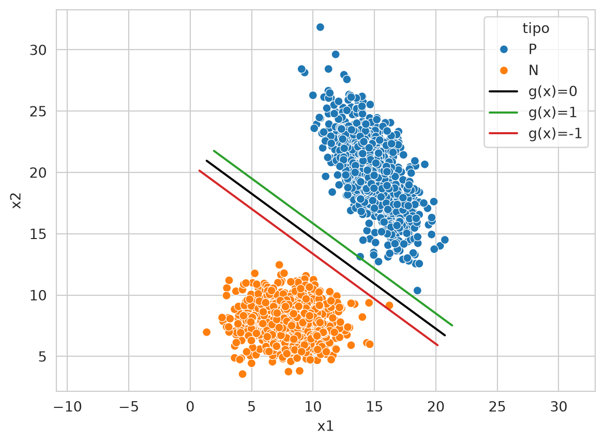
Continuando con el análisis del problema de optimización (Ecuación 9.3), se puede observar que el parámetro \(C\) controla la penalización que se hace a los elementos que se encuentran en el lado incorrecto del hiperplano o dentro del margen. La Figura 9.8 muestra el hiperplano generado utilizando \(C=1\) y \(C=0.01\), en la figura se aprecia como el elemento que está correctamente clasificado en \(C=1\) pasa al lado incorrecto del hiperplano, ademas la función de decisión rota cuando el valor de \(C\) cambia.
Código
for k, (C, legend) in enumerate(zip([1, 0.01], [False, True])):
linear = LinearSVC(dual=False, C=C).fit(T, y_t)
w_1, w_2 = linear.coef_[0]
w_0 = linear.intercept_[0]
w = np.array([w_1, w_2]) / np.linalg.norm([w_1, w_2])
g_0 = [dict(x1=x, x2=y, tipo='g(x)=0')
for x, y in zip(T[:, 0], (-w_0 - w_1 * T[:, 0]) / w_2)]
g_p = [dict(x1=p['x1'] + w[0], x2=p['x2'] + w[1], tipo='g(x)=1')
for p in g_0]
g_n = [dict(x1=p['x1'] - w[0], x2=p['x2'] - w[1], tipo='g(x)=-1')
for p in g_0]
df = pd.DataFrame(g_0 + g_p + g_n +\
[dict(x1=x, x2=y, clase='P') for x, y in X_1] + \
[dict(x1=x, x2=y, clase='N') for x, y in X_2]
)
ax = plt.subplot(1, 2, k + 1)
sns.scatterplot(data=df, x='x1', y='x2', hue='clase', legend=legend, ax=ax)
sns.lineplot(data=df, x='x1', y='x2', ax=ax,
hue='tipo', palette=['k'] + sns.color_palette()[2:4], legend=legend)
ax.axis('equal')
ax.set_title(f'C={C}')
if legend:
sns.move_legend(ax, "upper left", bbox_to_anchor=(1, 0.65))
_ = plt.tight_layout()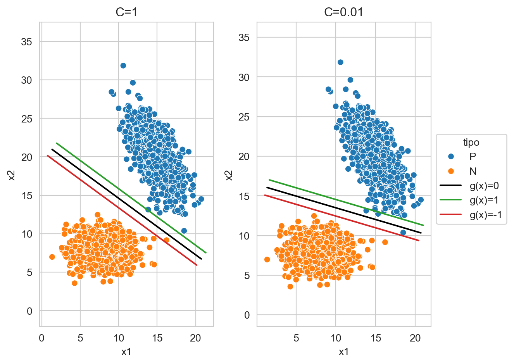
Continuando con el comportamiento de las MSV lineales, está se encuentra implementada en la clase LinearSVC y su uso se ejemplifica utilizando el problema de dígitos (Sección B.3.3); los datos se obtienen y se parten en los conjuntos de entrenamiento y prueba utilizando las siguientes instrucciones.
D, y = load_digits(return_X_y=True)
Xtrain, Xtest, ytrain, ytest = train_test_split(D, y,
random_state=21)El modelo se entrena siguiendo un procedimiento equivalente al de los otros modelos de clasificación vistos hasta ahora, tal y como se muestra a continuación.
svm = LinearSVC().fit(Xtrain, ytrain)
svm_n = make_pipeline(Normalizer(),
LinearSVC()).fit(Xtrain,
ytrain)En algunas ocasiones el rendimiento de MSV mejora cuando las entradas están normalizadas a tener una longitud uno.
En algunas ocasiones, el rendimiento de las MSV mejora cuando las entradas están normalizadas a tener una longitud unitaria. El siguiente código muestra un flujo de trabajo donde el primer paso es normalizar las entradas para tener una longitud unitaria y, posteriormente, se entrena una MSV.
svm_n = make_pipeline(Normalizer(),
LinearSVC()).fit(Xtrain,
ytrain)La Figura 9.9 muestra el promedio de la cobertura (macro-recall, ver Capítulo 4) entre las MSV sin la normalización (MSV) y cuando las entradas están normalizadas (MSV (Norm.)). Se observa que el mejor rendimiento corresponde a la MSV normalizada aunque es estadísticamente equivalente a la máquina con las entradas originales.
Código
score = recall_score(ytest, average='macro',
use_tqdm=False)
score(svm.predict(Xtest), name='MSV')
score(svm_n.predict(Xtest), name='MSV (Norm.)')
score.plot(value_name='Cobertura (promedio)',
alg_legend='Algoritmos',
comp_legend='Comparación',
winner_legend='Mejor',
tie_legend='Equivalente',
loser_legend='Diferente')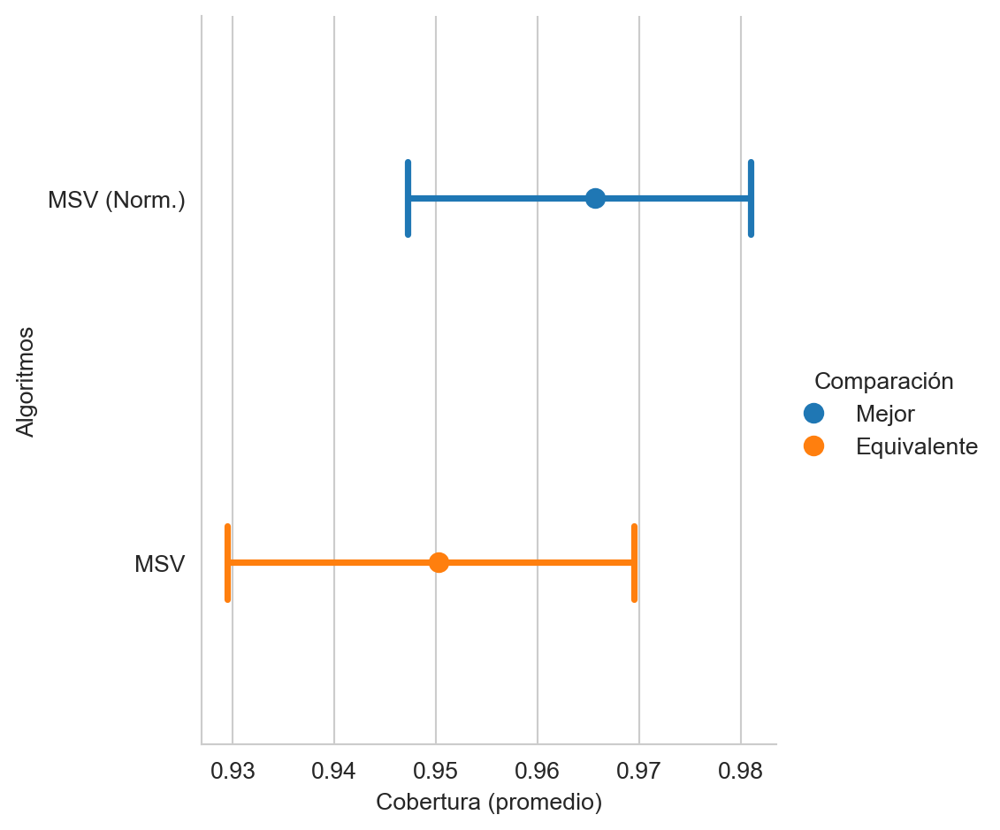
9.4.1 Kernel
En lugar de utilizar directamente las características \(\mathbf x\) se puede realizar una transformación \(\phi\) a estas características, esto haría que el hiperplano (Ecuación 9.4) quede cómo \(\mathbf w = \sum_i \alpha_i y_i \phi(\mathbf x_i)\), pasando esto a la función discrimintante \(g\) queda como \(g(\mathbf x) = \sum_i \alpha_i y_i \phi(\mathbf x_i) \cdot \phi(x) + w_0.\) El producto punto se puede cambiar por una función Kernel, i.e., \(K(\mathbf x_i, \mathbf x_j) = \phi(\mathbf x_i) \cdot \phi(\mathbf x_j)\) lo cual hace que sea innecesaria la transformación al espacio \(\phi.\)
La función discriminante está dada por \(g(\mathbf x) = \sum_i^N \alpha_i y_i K(\mathbf x_i, \mathbf x) + w_0,\) donde aquellos elementos donde \(\alpha_i > 0\) se les conoce como los vectores de soporte. Estos elementos son los que se encuentran en el margen, dentro del margen y en el lado incorrecto de la función discriminante.
La Figura 9.10 muestra los datos del iris (proyectados con Análisis de Componentes Principales Sección 5.5), las clases se encuentran en color azul, naranja y verde; en color rojo se muestran los vectores de soporte. La figura derecha muestra en color negro aquellos vectores de soporte que se encuentran en el lado incorrecto del hiperplano. Por otro lado se puede observar como los vectores de soporte separan las clases, del lado izquierdo se encuentran todos los elementos de la clase \(0\), después se observan las clases \(1\) y del lado derecho las clases \(2\). Los vectores de soporte están en la frontera de las clases y los errores se encuentran entre las clases \(1\) y \(2\) que corresponden a las que no son linealmente separables.
Código
X, y = load_iris(return_X_y=True)
linear = SVC(kernel='poly', degree=2, C=10).fit(X, y)
hy = linear.predict(X)
D = PCA(n_components=2).fit_transform(X)
mask = np.zeros(D.shape[0])
mask[linear.support_] = True
s = 'S'
df = pd.DataFrame([dict(x1=x1, x2=x2, tipo=f'{l if not c else s}', error=err)
for (x1, x2), c, l, err in zip(D, mask, y, y != hy)])
for k, legend in enumerate([False, True]):
if legend:
df.loc[df.error, 'tipo'] = 'X'
df.sort_values(by='tipo', inplace=True)
ax = plt.subplot(1, 2, k + 1)
sns.scatterplot(data=df, x='x1', y='x2',
palette=sns.color_palette()[:4] + ['k'],
hue='tipo', legend=legend, ax=ax)
if legend:
sns.move_legend(ax, "upper left", bbox_to_anchor=(1, 0.65))
_ = plt.tight_layout()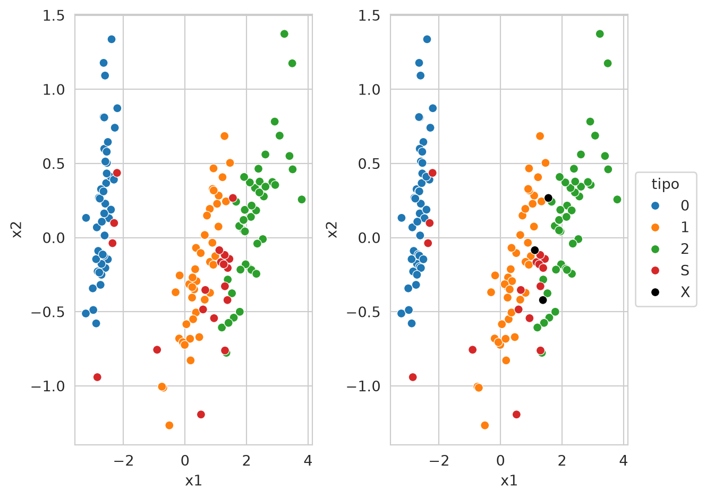
El uso de la MSV con un kernel polinomial de grado dos se ejemplifica en el siguiente código.
svm_k = SVC(kernel='poly', degree=2).fit(Xtrain, ytrain)La Figura 9.11 muestra el rendimiento de las MSV lineal con entradas originales y normalizadas, y una MSV con un kernel estimado en el paso anterior; se observa que el el kernel hace que el rendimiento sea estadísticamente superior a las MSV lineales.
Código
score(svm_k.predict(Xtest), name='MSV (Kernel)')
score.plot(value_name='Cobertura (promedio)',
alg_legend='Algoritmos',
comp_legend='Comparación',
winner_legend='Mejor',
tie_legend='Equivalente',
loser_legend='Diferente')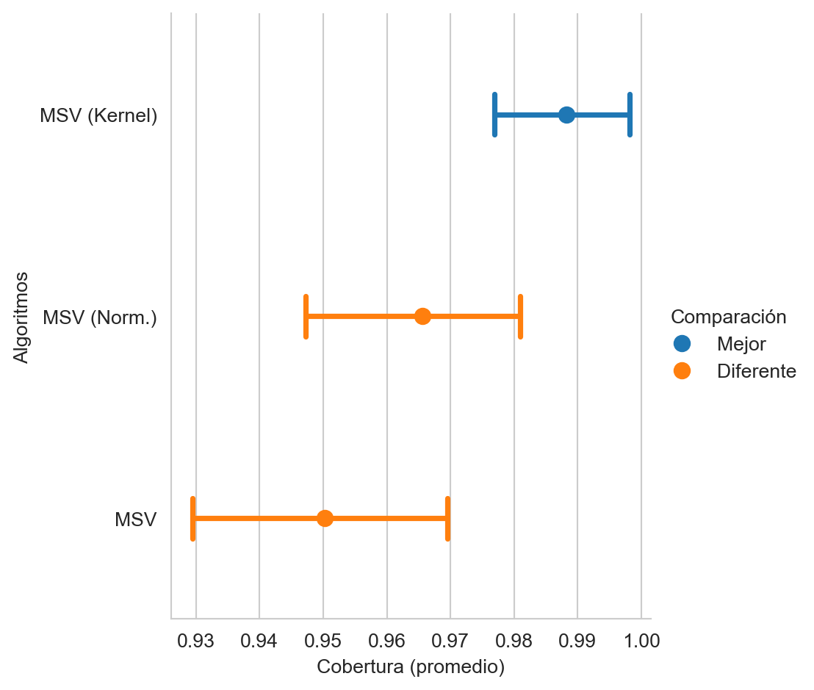
9.4.2 Regresión
Las máquinas de soporte vectorial también se pueden utilizar para resolver problemas de regresión; su uso se ejemplifica utilizando el problema de Diabetes (Sección 3.10.1), como se muestra en las siguiente dos instrucciones.
X, y = load_diabetes(return_X_y=True)
Xtrain, Xtest, ytrain, ytest = train_test_split(X, y, random_state=13)La clase LinearSVR implementa la máquina de soporte vectorial lineal y su uso sigue la misma dinámica que en el case de clasificación, e.g.,
svr = LinearSVR(C=100).fit(Xtrain, ytrain)
hy_svr = svr.predict(Xtest)donde la varianza capturada por el modelo (Ecuación 4.7) es: 0.4332.
9.5 Regresión Logística
En clasificación binaria (Sección 9.3.1) se describió que la función discriminante se puede definir como la resta, i.e., \(g_1(\mathbf x) - g_2(\mathbf x);\) equivalentemente se pudo haber seleccionado la división (\(\frac{g_1(\mathbf x)}{g_2(\mathbf x)}\)) para generar la función discriminante o el logaritmo de la división, i.e., \(\log \frac{g_1(\mathbf x)}{g_2(\mathbf x)}.\) Esta última ecuación en el caso de \(g_i(\mathbf x)=\mathbb P(\mathcal Y=i \mid \mathcal X=\mathbf x)\) corresponde a la función \(\textsf{logit}\), tal y como se muestra a continuación.
\[ \begin{split} \log \frac{\mathbb P(\mathcal Y=1 \mid \mathcal X=\mathbf x)}{\mathbb P(\mathcal Y=2 \mid \mathcal X=\mathbf x)} &= \log \frac{\mathbb P(\mathcal Y=1 \mid \mathcal X=\mathbf x)}{1 - \mathbb P(\mathcal Y=1 \mid \mathcal X=\mathbf x)}\\ &= \textsf{logit}(\mathbb P(\mathcal Y=1 \mid \mathcal X=\mathbf x)), \end{split} \]
donde la inversa del \(\textsf{logit}\) es la función sigmoide, \(\textsf{sigmoid}(x) = \frac{1}{1 + \exp(-x)}\), es decir \(\textsf{sigmoid}(\textsf{logit}(y)) = y\).
Trabajando un poco con el \(\textsf{logit}\) se puede observar que para el caso de dos clases está función queda como
\[ \begin{split} \textsf{logit}(\mathbb P(\mathcal Y=1 \mid \mathcal X=\mathbf x)) &= \log\frac{\mathbb P(\mathcal Y=1 \mid \mathcal X=\mathbf x)}{\mathbb P(\mathcal Y=2 \mid \mathcal X=\mathbf x)}\\ &= \log\frac{\mathbb P(\mathcal X=\mathbf x \mid \mathcal Y=1)\mathbb P(\mathcal Y=1)}{\mathbb P(\mathcal X=\mathbf x \mid \mathcal Y=2)\mathbb P(\mathcal Y=2)}\\ &= \log\frac{\mathbb P(\mathcal X=\mathbf x \mid \mathcal Y=1)}{\mathbb P(\mathcal X=\mathbf x \mid \mathcal Y=2)} + \log\frac{\mathbb P(\mathcal Y=1)}{\mathbb P(\mathcal Y=2)} \end{split}, \]
asumiendo que la matriz de covarianza (\(\Sigma\)) es compartida entre las dos clases la ecuación anterior quedaría como:
\[ \begin{split} \textsf{logit}(\mathbb P(\mathcal Y=1 \mid \mathcal X=\mathbf x)) &= \log \frac{(2\pi)^{-\frac{d}{2}} \mid\Sigma \mid^{-\frac{1}{2}}\exp{(-\frac{1}{2}(\mathbf x - \mathbf \mu_1)^\intercal \Sigma^{-1}(\mathbf x - \mathbf \mu_1))}}{(2\pi)^{-\frac{d}{2}} \mid\Sigma \mid^{-\frac{1}{2}}\exp{(-\frac{1}{2}(\mathbf x - \mathbf \mu_2)^\intercal \Sigma^{-1}(\mathbf x - \mathbf \mu_2))}}\\ &+ \log\frac{\mathbb P(\mathcal Y=1)}{\mathbb P(\mathcal Y=2)}\\ &= \mathbf w \cdot \mathbf x + w_0 \end{split} \]
donde \(\mathbf w=\Sigma^{-1}(\mathbf \mu_1 - \mathbf \mu_2)\) y \(w_0=-\frac{1}{2}(\mathbf \mu_1 + \mathbf \mu_2)^\intercal \Sigma^{-1}(\mathbf \mu_1 + \mathbf \mu_2)+ \log\frac{\mathbb P(\mathcal Y=1)}{\mathbb P(\mathcal Y=2)}.\)
En el caso de regresión logística, se asume que \(\textsf{logit}(\mathbb P(\mathcal Y=1 \mid \mathcal X=\mathbf x)) = \mathbf w \cdot \mathbf x + w_0\) y no se asume nada con respecto a la distribución que tienen los datos. Equivalentemente, se puede asumir que \(\log\frac{\mathbb P(\mathcal Y=1 \mid \mathcal X=\mathbf x)}{\mathbb P(\mathcal Y=2 \mid \mathcal X=\mathbf x)} = \mathbf w \cdot \mathbf x + w_0^0,\) realizando algunas substituciones se puede ver que \(w_0 = w_0^0 + \log\frac{\mathbb P(\mathcal Y=1)}{\mathbb P(\mathcal Y=2)}.\)
9.5.1 Optimización
Se puede asumir que \(\mathcal Y \mid \mathcal X\) sigue una distribución Bernoulli en el caso de dos clases, entonces el logaritmo de la verosimilitud (Sección 3.3.1) quedaría como:
\[ \ell(\mathbf w, w_0 \mid \mathcal D) = \prod_{(\mathbf x, y) \in \mathcal D} (C(\mathbf x))^{y} (1 - C(\mathbf x)))^{1-y}, \]
donde \(C(\mathbf x)\) es la clase estimada por el clasificador.
Siempre que se tiene que obtener el máximo de una función esta se puede transformar a un problema de minimización, por ejemplo, para el caso anterior definiendo como \(E = -\log \ell\), utilizando esta transformación el problema sería minimizar la siguiente función:
\[ E(\mathbf w, w_0 \mid \mathcal D) = - \sum_{(\mathbf x, y) \in \mathcal D} y \log C(x) + (1-y) \log (1 - C(x)). \tag{9.5}\]
Es importante notar que la ecuación anterior corresponde a Entropía cruzada (Sección 4.2.7), donde \(y=\mathbb P(\mathcal Y=y \mid \mathcal X=\mathbf x))\) y \(C(\mathbf x)=\mathbb{\hat P}(\mathcal Y=y \mid \mathcal X=\mathbf x)\) y los términos \(1-y\) y \(1-C(\mathbf x)\) corresponde a la otra clase.
Otra característica de \(E(\mathbf w, w_0 \mid \mathcal D)\) es que no tiene una solución cerrada y por lo tanto es necesario utilizar un método de optimización (Capítulo 10) para encontrar los parámetros \(\mathbf w\) y \(w_0\).
En el caso de regresión logística, el logaritmo de la verosimilitud está dada por la Ecuación 9.6; esta función es cóncava, lo cual hace que pueda ser maximizada por algún algoritmo de optimización convexa.
\[ \log \ell(\mathbf w, w_0) = \sum_i y_i \mathbf w \cdot \mathbf x_i + w_0 - \log (1 + \exp^{\mathbf w \cdot \mathbf x_i + w_0}) \tag{9.6}\]
Normalmente, se suele incluir una función que penaliza la complejidad del modelo, normalmente utilizando alguna norma sobre los parámetros. Siguiendo esta idea la Ecuación 9.7 muestra el problema de optimización que se sigue en la regresión logística, donde el parámetro \(C\) pesa el término que mide la complejidad del modelo, i.e., \(\mid\mid \mathbf w \mid\mid\).
\[ \begin{split} \max & ~\log \ell(\mathbf w, w_0) - C \mid\mid \mathbf w \mid\mid \\ \end{split} \tag{9.7}\]
La Ecuación 9.7 se puede codificar CVXPY (Diamond y Boyd (2016)) utilizando las siguientes instrucciones. Las primeras dos líneas ponen en la variable X las variables independientes y en y la clase. En w y w0 están las parámetros del modelo, es decir, las variables a optimizar, siguiendo por el parámetro C que penaliza la complejidad. La variable verosimilitud calcula la Ecuación 9.6, el problema de optimización se encuentra en la variable prob y se optimiza la última línea.
X = np.concatenate((X_1, X_2))
y = np.array([1] * X_1.shape[0] + [0] * X_2.shape[0])
w = cp.Variable(X.shape[1])
w0 = cp.Variable()
C = cp.Parameter(pos=True)
hy = X @ w + w0
verosimilitud = cp.mean(cp.multiply(hy, y) - cp.logistic(hy))
prob = cp.Problem(cp.Maximize(verosimilitud - C * cp.norm(w)))
C.value = 1
_ = prob.solve(solver='SCS')9.5.2 Múltiples classes
En el caso de tener múltiples clases, en el caso de regresión logística, se puede modelar con una función categórica, donde el logaritmo de la verosimilitud esta dado por
\[ \log \ell(W, W_0) = \sum_i \log \mathbb{\hat P}(\mathcal Y=y_i \mid \mathcal X=\mathbf x_i) \tag{9.8}\]
y \(\mathbb{\hat P}(\mathcal Y \mid \mathcal X=\mathbf x) = \textsf{softmax}(W \cdot \mathbf x + W_0)\) (ver Ecuación 11.1). Siguiendo el procedimiento anterior el siguiente código códifica en CVXPY el problema de regresión logística multinomial.
En la primera línea se cargan los datos del problema de clasificación, en las variables X y y, la segunda línea cuenta el número de clases. La variable Wt y W0 contienen los parámetros del modelo es decir \(W^\intercal\) y \(W_0\), den calcula el valor del denominador de la función \(\textsf{softmax}\) y logit corresponde al numerador solamente de la clase medida. La variable verosimilitud contienen el valor calculado en la Ecuación 9.8, el problema de optimización está en prob y se ejecuta en la última linea.
X, y = load_iris(return_X_y=True)
nclasses = np.unique(y).shape[0]
Wt = cp.Variable((X.shape[1], nclasses))
W0 = cp.Variable(nclasses)
C = cp.Parameter(pos=True)
hy = X @ Wt + W0
den = cp.log_sum_exp(hy, axis=1)
logit = hy[np.arange(y.shape[0]), y]
verosimilitud = cp.mean(logit - den)
prob = cp.Problem(cp.Maximize(verosimilitud - C * cp.norm(W, 'fro')))
C.value = 0.01
_ = prob.solve(solver='SCS')9.6 Comparación
Es momento de comparar el comportamiento de los dos métodos de discriminantes lineales visto en la unidad, estos son, Máquinas de Soporte Vectorial (MSV) y Regresión Logística (RL). La Figura 9.12 muestra el hiperplano generado por MSV y RL, además se puede observar los valores de los pesos \(\mathbf w\) para cada uno de los algoritmos.
Código
svm = LinearSVC(dual=False).fit(T, y_t)
lr = LogisticRegression().fit(T, y_t)
g = []
for model, tipo in zip([svm, lr], ['MSV', 'RL']):
w_1, w_2 = model.coef_[0]
w_0 = model.intercept_[0]
g += [dict(x1=x, x2=y, tipo=tipo)
for x, y in zip(T[:, 0], (-w_0 - w_1 * T[:, 0]) / w_2)]
g.append(dict(x1=w_1, x2=w_2, clase=tipo))
df = pd.DataFrame(g + \
[dict(x1=x, x2=y, clase='P') for x, y in X_1] + \
[dict(x1=x, x2=y, clase='N') for x, y in X_2]
)
ax = sns.scatterplot(data=df, x='x1', y='x2', hue='clase', legend=True)
sns.lineplot(data=df, x='x1', y='x2',
ax=ax, hue='tipo',
palette=sns.color_palette()[:2],
legend=True)
_ = ax.axis('equal')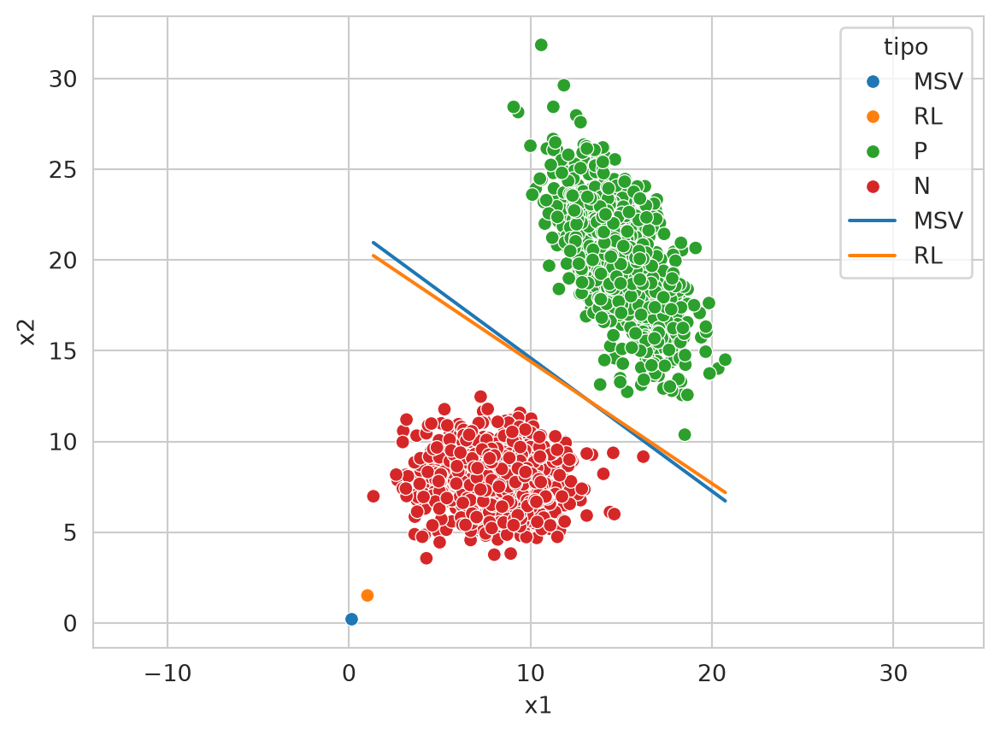
Complementando la comparación anterior con los datos del iris que se pueden obtener con las siguientes dos instrucciones.
D, y = load_iris(return_X_y=True)
T, G, y_t, y_g = train_test_split(D, y,
test_size=0.4,
random_state=3)Los clasificadores a comparar son una máquina de soporte vectorial lineal, una máquina de soporte vectorial usando un kernel polinomial de grado \(1\) y una regresión logística, tal y como se muestra en el siguiente código.
svm = LinearSVC(dual=False).fit(T, y_t)
svm_k = SVC(kernel='poly', degree=1).fit(T, y_t)
lr = LogisticRegression().fit(T, y_t)La Tabla 9.1 muestra el rendimiento (en medidas macro) de estos algoritmos en el conjunto de prueba, se puede observar que estos algoritmos tienen rendimientos diferentes para esta selección del conjunto de entrenamiento y prueba. También en esta ocasión la regresión lineal es la que presenta el mejor rendimiento. Aunque es importante aclarar que este rendimiento es resultado del proceso aleatorio de selección del conjunto de entrenamiento y prueba.
| Clasificador | Precisión | Recall | \(F_1\) |
|---|---|---|---|
| MSV - Lineal | \(0.9524\) | \(0.9500\) | \(0.9473\) |
| MSV - Kernel | \(0.9474\) | \(0.9481\) | \(0.9473\) |
| RL | \(0.9524\) | \(0.9500\) | \(0.9473\) |